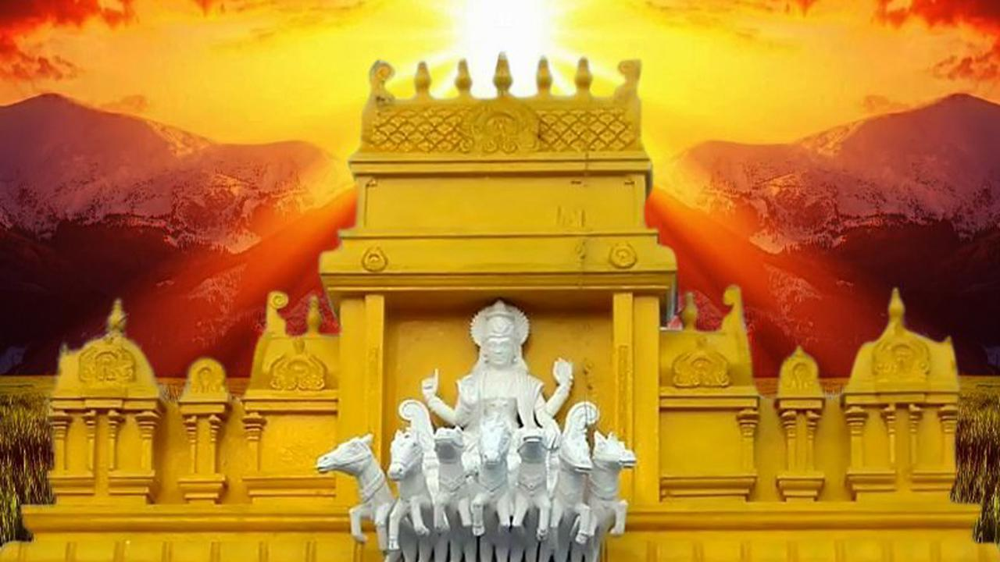
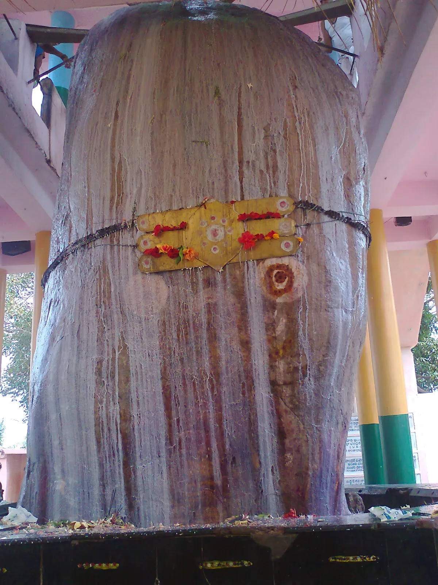

Srikakulam (Telugu - శ్రీకాకుళం) is a town, municipality and headquarters of Srikakulam district in the north-eastern Andhra Pradesh, India. With the same name there is a "Srikakulam Assembly constituency" and a "Srikakulam Parliament Constituency'". Srikakulam-municipality present . Srikakulam was formerly called as Gulshanabad (Garden city) during muslim rule and was headquarter of muslim fauzdars. It was renamed as Chicacole by British colonial rulers and after independence, it was renamed as Srikakulam.
There are two places with the same name in the state. A district and town by the same name on the north east corner of the state as well as a small village on the bank of river Krishna in Ghantasala (Mandal) of Krishna district. The village Srikakulam houses the Andhra MahaVishnu temple. Legend says that this temple was constructed by the great Krishnadevaraya of the Vijayanagara Kingdom.
About Srikakulam :Imagine a place, Where North India meets South India Where gushing Rivers rush through lush green hill tops to reach Bay of Bengal. Where the golden sands on beaches couple with variety of flora and fauna. Where ancient Hindu temples flourish side by side with Buddhist monuments. Where traditional agricultural forms go hand in hand with modern Industry.
let's start our tour
1.sri suryanarayanaya temple arasavilli

It is one of the ancient and all among two sun God temples in our Country. According to Padmapuranam , Sage Kasyapa installed the Idol of Surya at Arasavalli for the Welfare of mankind . Therefore , the Surya is of Kasyapasa Gotra . He is also termed as planetary King
Srikurmam temple is known for its distinctive architectural style. The design of the gopuram is different from the regular style seen at other Vaishnavite temples. It also has two dhvajasthambas, one on the west and the other on the east, which is another rare element in a Vaishnavite temple.
more about srikurmam temple
TAP ON IMAGE
3.EndalaMalleswara temple at Ravivalasa -near Tekkali .

An ancient temple dedicated to Sri Endala Mallikarjuna Swamy is in the village of Ravivalasa. This linga, believed to be swayambhu (self-manifested), measures about 20m in height and 3m in width. According to legend, the Pandavas visited this temple during their exile and met Maharishi Markandeya here.
Kota Durgamma Temple is one of the ancient temples in Srikakulam District. This temple is located in Palakonda Town. The temple is dedicated to the Goddess Durga Devi. Here the Dwarapalikas named as Chandika and Prachandika. Once upon a time the goddess is Kuladevatha for the “Savara Rajas Dinasty”. This temple was renovated in the year of 1947. The Goddess Kota Durgamma is (Swayambhu) idol is a self manifested in this temple. This temple is situated in a fort. Hence he goddess called as Kota Durgamma. This temple is he witness of Palakonda zamindar’s ruled in Palakonda.
Photo Gallery